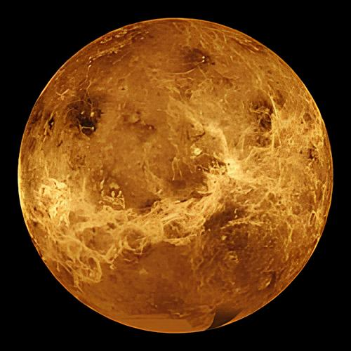

465 °C
Temperatura média da superfície, quente o suficiente para representar um grande perigo.
Zeus chegou a Vênus! Mas atravessar esse planeta não será uma tarefa fácil. Com temperaturas extremas e uma atmosfera muito densa, cada decisão pode fazer a diferença.
EXPLORAR PLANETA
Antes de começar a missão, Zeus precisa conhecer os perigos que encontrará pelo caminho.
Temperatura média da superfície, quente o suficiente para representar um grande perigo.
A atmosfera é composta principalmente por dióxido de carbono e possui nuvens de ácido sulfúrico.
A atmosfera retém muito calor, fazendo de Vênus o planeta mais quente do Sistema Solar.
Zeus precisa atravessar uma região perigosa para chegar até o sinal de um colega desaparecido.
O calor de Vênus pode danificar equipamentos.
O traje de Zeus não suporta exposição prolongada.
A nave possui energia limitada para o percurso.
O caminho é mais curto, mas apresenta rachaduras no solo, atividade vulcânica e temperaturas elevadas.
O caminho é mais longo e possui formações rochosas que podem servir de abrigo durante o percurso.
O terreno é plano e não apresenta obstáculos aparentes. Porém, não existem abrigos durante todo o trajeto.
Excelente escolha! A rota dos abrigos permite que Zeus se proteja do calor extremo durante o percurso.
Você analisou os riscos e tomou a melhor decisão!Zeus encontrou um sinal de comunicação de um dos colegas desaparecidos. A próxima localização aponta para Marte!
Caminho curto e direto, mas completamente aberto, deixando Zeus exposto às partículas corrosivas durante todo o percurso.
Caminho protegido por formações rochosas, mas com vários desvios que aumentam o tempo e o consumo de energia.
Caminho intermediário, com pontos de proteção natural e distância suficiente para evitar exposição prolongada.
A rota dos arcos rochosos permitiu que Zeus utilizasse as formações naturais como proteção, sem precisar percorrer uma distância muito longa.
Você encontrou o equilíbrio entre segurança e energia! CONTINUAR MISSÃO →Ativar todos os sistemas de comunicação e navegação na potência máxima para localizar o colega rapidamente.
Desligar os sistemas de proteção para economizar energia e utilizar apenas a navegação básica.
Utilizar os sistemas de comunicação em intervalos estratégicos, economizando bateria e mantendo os equipamentos de proteção ativos.
Excelente decisão! Zeus conseguiu economizar energia utilizando a comunicação em intervalos estratégicos, sem comprometer os sistemas de proteção.
Você administrou os recursos e conseguiu encontrar o sinal!O sinal pertence a um dos colegas desaparecidos! A próxima localização aponta para Marte.
Zeus conseguiu atravessar Vênus e encontrou uma pista importante. Mas ainda existem outros colegas esperando por ajuda.
IR PARA MARTE →